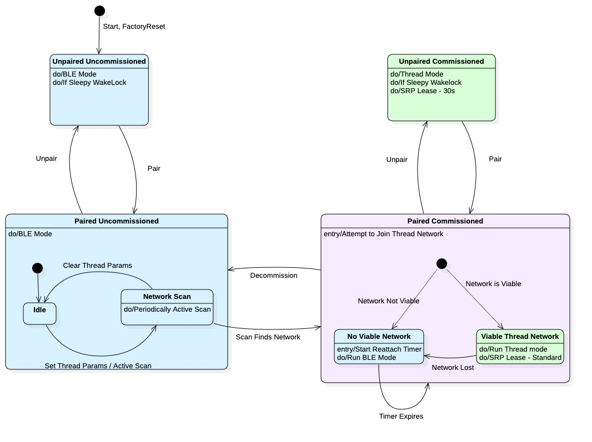

Thread Use Cases¶
This document describes the Use Cases a Thread Accessory is expected to provide.
Accessory States¶
Commissioned: A Thread Accessory is Commissioned if it has received Thread Network Credentials.
Paired: A Thread accessory is paired if it has at least one pairing from a HAP Controller. This pairing could have been performed over BLE; the accessory is still Paired.
Detached: A Detached Thread accessory is one that has been commissioned but cannot find a Viable Thread Network corresponding to its Network Credentials to join.
Definitions¶
Viable: A Thread network is Viable if it contains at least one Border Router and serves at least one instance of srp-mdns-proxy.
Joiner Mode: A mode of operation that allows an Accessory to be commissioned via the Thread Network.
Thread & BLE Accessories¶
A HAP controller may communicate with an accessory over either BLE or Thread transport protocol but not over both. Accessories do not advertise over BLE while Thread transport is up.
Uncommissioned: An Uncommissioned Accessory operates in BLE mode.
Commissioned: A Commissioned Accessory operates in one of two modes.
Thread Mode¶
Upon becoming Commissioned The accessory initiates Attach to Thread Network Flow.
If successful, the Accessory will be reachable via Thread.
BLE Fallback Mode¶
If unsuccessful, or if the Thread Network is Lost the Commissioned accessory falls back to BLE.
Accessories operating in BLE Fallback mode periodically attempt to perform the Thread Attach flow to reconnect to their Thread Network.
This continues until the network is found or the accessory is Decommissioned.
Alternate Flow - Unpaired¶
An accessory that is Unpaired but also Commissioned, which can happen when the last pairing is removed, will perform the same actions with the following exceptions:
Sleepy Unpaired Commissioned Accessories will not enter sleep mode to facilitate pairing.
Pairing¶
There are two methods of Pairing. Over BLE or over Thread.
Standard Flow¶
Accessory is in BLE mode
User initiates Pairing by scanning QR code or entering setup id.
Controller Pairs with accessory over BLE.
Controller Commissions the Accessory over BLE via the Commissioning Flow
This transitions the Accessory to Thread Mode. The controller will now interact with the accessory over Thread.
Commissioning¶
Thread/BLE accessories may only be commissioned over BLE. Once commissioned the accessory will attempt to transition to Thread.
Standard Flow¶
Thread Network Credentials are sent to the Thread Accessory over BLE.
The Thread Accessory performs an Active Scan to find a thread network with matching credentials.
Upon finding a matching network, the Thread Accessory commits the credentials and is now Commissioned.
The Thread Accessory initiates the Attach to Thread Network flow.
The Thread Accessory disables BLE and is now only reachable over Thread.
Alternative Flow - Failure to find Thread Network in Scan¶
When the Thread Network cannot be found with an active scan within a specified period of time (Currently set to 65 seconds).
The Accessory remains in BLE mode.
The accessory periodically performs the Active Scan to find a Thread Network matching the credentials provided.
If a matching network is found during these scans, the Thread Accessory commits the credentials and is now Commissioned.
The Thread accessory then initiates the Attach to Thread Network flow.
If successful, the Accessory disables BLE and is now only reachable over Thread.
Alternative Flow - Attach To Thread Network flow fails¶
Once the Active Scan has been successfully performed the Thread Accessory is Commissioned, but that does not mean it can use the Thread Network. If the network is not Viable, the Attach will fail.
The Thread Accessory will continue to operate in BLE mode.
As a commissioned device, the Accessory will periodically reattempt the Attach to Thread Network flow.
If rebooted The Thread Accessory will perform the Commissioned flow.
Decommissioning¶
Controller initiates decommissioning by sending a “Clear Thread Credentials” command to the Thread Accessory.
Thread Accessory erases all thread network credentials.
Thread Accessory disables Thread and returns to BLE mode. The Accessory is no longer Commissioned.
Attaching to Thread Network¶
Standard Flow¶
The Accessory will join the commissioned Thread Network.
The Accessory will verify that the Thread Network it has joined is Viable. A Thread network is Viable if it has a border router and srp-mdns-proxy.
The accessory disables BLE and Transitions to Thread completely.
The accessory sends its advertisement to the MDNS Proxy.
Alternative Flow: Network is not Viable¶
If the Thread Network does not have a Border Router or is serving srp-mdns-proxy it is not Viable.
The accessory will enter a The accessory will refuse to join a network that is not Viable, and will return to BLE mode.
As long as the Accessory is Commissioned it will periodically reattempt the Attach to Thread Network flow.
Lost Thread Network¶
Accessory is notified that the Thread Network is no longer Viable. This means either that it has lost a connection to its Parent and cannot attach to any other, the Border Router can no longer be found on the network, or srp-mdns-proxy is no longer served by the network.
Accessory will enter a grace period (currently lasting 65 seconds) to see if the accessory can reattach to the network.
Upon expiration of the grace period the Accessory will return to BLE operation and exit Thread mode.
As long as the Accessory is Commissioned, it will periodically reattempt the Attach to Thread Network flow.
Factory Reset¶
Factory Reset clears all parameters, Pairings, and Commissioned Thread Network Credentials.
Factory Reset is initiated.
Pairings are removed.
The Accessory is Decommissioned.
The Accessory is rebooted. It will boot into the Uncommissioned flow.
Thread Only Accessories¶
Some accessories may not support BLE. These accessories do not transition between BLE and Thread modes.
Thread Only Uncommissioned Idle¶
Uncommissioned Accessories immediately attempt to join a Thread Network.
Accessory enters Joiner-Mode to look for Thread Networks.
Accessory repeats Joiner-Mode until successful Commissioning is completed.
Note: Sleepy Devices will prevent themselves from going to sleep while Uncommissioned and Unpaired to facilitate Network Join and Pairing.
Thread Only Commissioned Idle¶
A Commissioned Thread Accessory will attach to its Thread Network. It does not check whether the network is Viable because there is no BLE to fall back to.
Alternate Flow: Lost Network¶
If a Commissioned and Paired Thread only Accessory loses its Thread network it will enter the Detached state. It will remain in this state until Factory Reset or the Thread Network is recovered.
Pairing¶
Native Thread pairing is performed as follows:
User initiates Pairing by scanning QR code.
Controller commissioned the accessory via the Commissioning Flow.
Controller pairs with the accessory over Thread.
Thread Only Commissioning¶
Thread Accessory enters Joiner-Mode.
Controller initiates a Commissioner - Add using the Accessory’s EUI and Passphrase (Provided via QR Code).
Accessory is provided Thread Network Credentials from the Thread Network directly. Accessory is now Commissioned.
Accessory attaches to the Thread Network.
Thread Only Decommissioning¶
Thread Accessory leaves the Thread Network.
Thread Accessory erases all Thread Network credentials.
Thread Accessory returns to Uncommissioned.
Thread Only Factory Reset¶
Factory Reset clears all parameters, Pairings, and Commissioned Thread Network Credentials.
Factory Reset is initiated.
Pairings are removed.
The Accessory is Decommissioned.
The Accessory is rebooted. It will boot into the Uncommissioned flow.
Unpairing and Unpaired Advertising¶
By default, if an ADK Application is on a Thread Network and its last pairing is removed, it will remain on the Thread Network and begin advertising as unpaired on that network to facilitate pairing over that Thread Network. However, for some devices, especially devices relating to security, this may not be desirable.
For this reason, the Thread HAP Accessory Server Options structure defines suppressUnpairedThreadAdvertising. Example code will set this option to true by using the following command:
make PROTOCOLS=THREAD HAP_THREAD_DECOMMISSION_ON_UNPAIR=1 apps
If this option is set to true, it will ensure the ADK Accessory does not advertise itself as unpaired over the Thread Network. This allows an ADK Application to handle several use cases, including but not limited to:
Purposely transition to BLE, and/or
Stop the Thread Transport, and/or
Decommission from the Thread Network, and/or
Stop the entire ADK Accessory Server, and/or
Execute any other necessary Application/Hardware specific logic related to unpairing before refreshing the Thread Advertisement
State Diagram¶
The following state diagram describes the general behavior of Thread/BLE devices. 